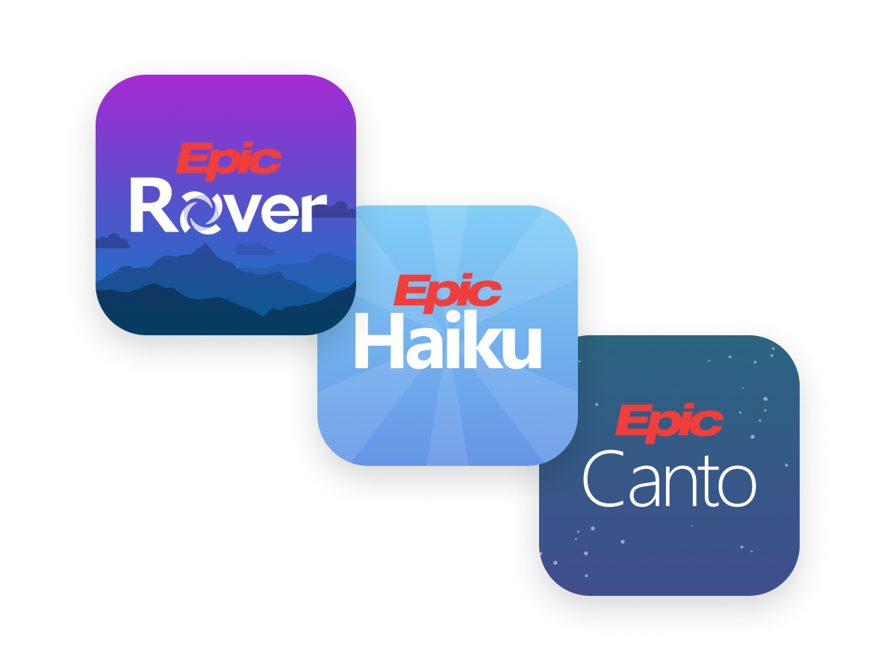
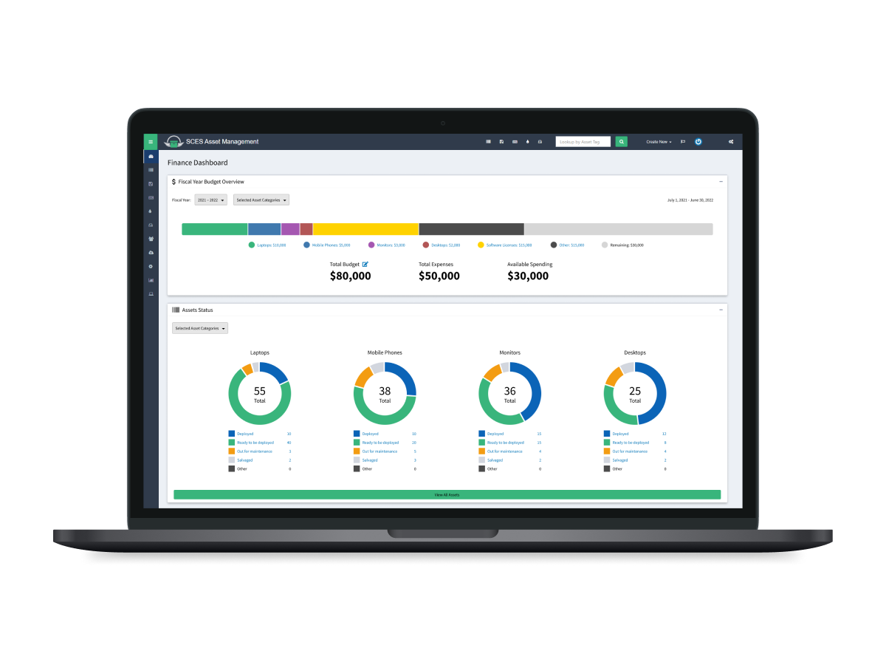

Epic Systems: Clinical Mobile Experience
Improving mobile workflows for clinicians through systemic consistency and platform parity.

Amazon Alexa Echo Buds
Identifying and designing on-the-go safety features and multimodal interactions for the Echo Buds line.

Asset Management Dashboard
Designing a fiscal dashboard for a university finance team to centralize IT inventory and budget health.

Hack at UCI
Leading visual design and branding for one of UCI's largest student organizations.